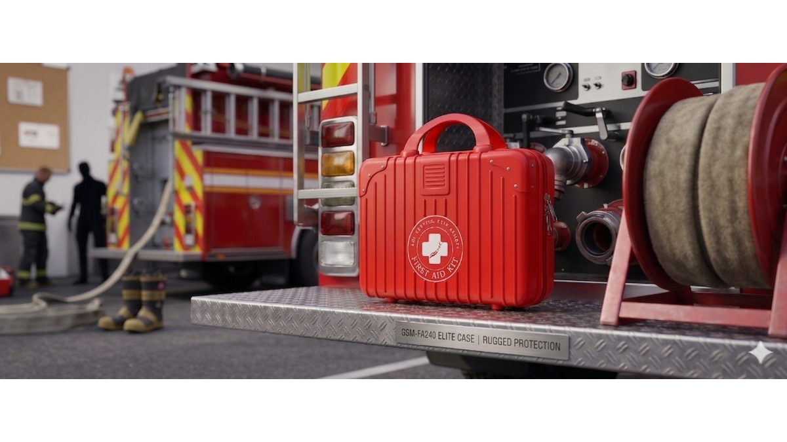

Choosing the Right First Aid Kit for South African Fire Safety: A 2026 Compliance Guide
MAY 14, 2026

In the South African industrial and commercial sectors, compliance with SANS 10400 and OHS regulations is critical. This guide compares the GSM-FA-240 (180-piece flagship hard case) and GSM-FA-191 (60-piece essential soft pack). For high-risk fire safety installations, the GSM-FA-240 is recommended due to its integrated trauma module and emergency lighting. For general office compliance, the GSM-FA-191 offers a cost-effective, audit-ready solution.
A Real-World Case from South Africa
Last week, I spent a significant amount of time consulting with a new client from South Africa. Their firm specializes in fire risk assessment and integrated safety design—the kind of professionals who don't just "buy" equipment, but "engineer" safety solutions.
Their challenge was specific: They needed first aid kits that weren't just compliant on paper, but could actually survive a real-world evacuation scenario and meet the strict SANS 10400 building audit requirements. After analyzing their project's dual focus on commercial installations and professional fire safety training, I recommended a strategic pairing of our GSM-FA-240 and GSM-FA-191 models.
Here is why this specific "High-Low" strategy is becoming the benchmark for our South African partners in 2026.
Technical Comparison: Flagship vs. Essential
To provide the best value, we must distinguish between "passing an audit" and "managing a disaster." Below is the technical breakdown of our two most requested models.
| Feature | GSM-FA-240 (The Flagship) | GSM-FA-191 (The Essential) |
|---|---|---|
| Total Components | 180 Pieces | 60 Pieces |
| Primary Casing | High-Visibility Red Hard Case | Lightweight Nylon Soft Pack |
| Fire Safety Essentials | Burn Dressing, Eye Pad, Blanket | Burn Dressing, Eye Pad, Blanket |
| Advanced Trauma Gear | Hand-driven Flashlight, Splint, Tourniquet | Core Wound Management |
| Best Application | Industrial Sites, Factories, Schools | Small Offices, Training Giveaways |
| Installation Style | Permanent Wall-Mount Station | Portable/Stowable Pouch |
Industry Insight: Why General Office Kits Often Fail Fire Audits
In a fire emergency, the primary threats are thermal damage and visibility loss. A standard office kit optimized for minor cuts is insufficient.
1. The Power of Visibility (GSM-FA-240)
During our discussion, the South African client emphasized that fire emergencies often involve power outages. The GSM-FA-240 includes a hand-driven flashlight, ensuring rescuers have light without worrying about dead batteries. Its bright red, wall-mounted hard case acts as a visible "safety landmark" in smoke-filled corridors.
2. Specialized Burn & Trauma Care
Unlike general-purpose kits, both these professional models prioritize Hydrogel Burn Dressings. In the first 60 seconds of a burn injury, having immediate access to cooling agents is critical for stopping tissue damage. While the GSM-FA-191 provides the essentials for a quick response, the GSM-FA-240 adds a comprehensive trauma module for handling more complex injuries during an evacuation.
Expert Verdict: Which One Should You Order?
- Choose the GSM-FA-240 if you are designing a safety solution for high-risk industrial clients, warehouses, or premium commercial buildings where zero-liability and professional-grade readiness are the priority.
- Choose the GSM-FA-191 if your goal is to provide high-quality, cost-effective compliance for general office environments or as a practical gift for safety training participants.
At GoSafeMed, we don't just supply boxes; we provide the technical utility required to save lives.
FAQ
Q: Does the GSM-FA-240 meet SANS 10400 fire safety requirements?
A: Yes. Its comprehensive trauma and burn modules are curated to align with the high-standard safety audits required for commercial and industrial buildings in South Africa.
Q: Why is a hand-driven flashlight included in the flagship kit?
A: Fire emergencies often lead to power failure. A hand-driven flashlight ensures that the first aid station remains functional and provides light during evacuations without relying on external power or batteries.
Q: Can these kits be customized for specific South African government tenders?
A: Absolutely. We specialize in adjusting component counts and specifications to match the exact requirements of provincial or industry-specific tender documents.